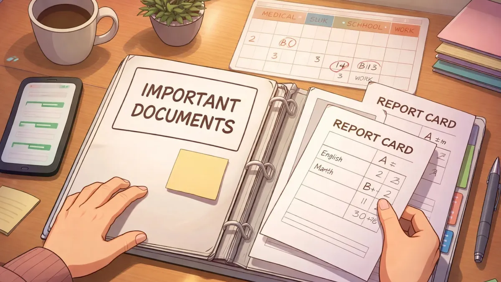

5 Steps - How to Prepare for Your Indiana Custody Hearing and Build a Stronger Case
Let's be honest: walking into the Jennings County Courthouse for a custody hearing is one of the most stressful things a parent can do. Your stomach's in knots, your mind's racing, and all you can think about is your kids.
I get it. And I want you to know something important: being nervous doesn't mean you're not ready. It means you care.
Whether you're going through a divorce, seeking a modification, or dealing with a contested custody situation, preparation is everything. The good news? You don't need a law degree to get organized. You just need a clear plan.
So grab a cup of coffee, take a breath, and let's walk through the five steps that can help you feel confident and prepared when your day in court arrives.
Step 1: Understand Indiana Custody Laws and Know What You're Asking For
Before you do anything else, you need to get clear on two things: what Indiana law says and what you actually want.
Indiana courts make custody decisions based on one main question: What's in the best interest of the child? That's it. Not what's fair to you. Not what punishes the other parent. The judge wants to know what arrangement will help your kids thrive.
Here are some of the factors Indiana judges consider:
The age and sex of the child
The wishes of the parents and the child (if the child is old enough)
The relationship between the child and each parent
The child's adjustment to home, school, and community
The mental and physical health of everyone involved
Any history of domestic violence or substance abuse
Take some time to think about which of these factors work in your favor. Be honest with yourself about where you're strong and where you might need to improve.
You also need to know exactly what you're asking for. Are you seeking sole physical custody? Joint custody? More parenting time? A modification to an existing order? The clearer you are about your goals, the better you can prepare your case.
Step 2: Gather and Organize Your Documentation
Here's where the real work begins. Documentation is your best friend in a custody case. Judges don't want to hear "he said, she said." They want evidence.
Start collecting anything that shows you're an involved, responsible parent. This includes:
School records. Report cards, attendance records, notes from teachers.
Medical records. Doctor's visits, vaccination records, any ongoing health concerns.
Communication logs. Text messages, emails, phone call records with the other parent.
Parenting time calendars. A record of when you've had the kids and what you did together.
Photos and videos. Pictures from birthday parties, school events, sports games: anything showing your bond with your children.
Financial documents. Pay stubs, tax returns, proof you can provide for your kids.
Get a binder or folder and organize everything by category. Label it clearly. When you're sitting in the Jennings County Courthouse and your Jennings County attorney needs that one text message from six months ago, you'll be glad you did the work upfront.
One more tip: start keeping a journal now. Write down important events, conversations, and anything that might be relevant to your case. Date everything. This kind of real-time documentation can be incredibly powerful.

Step 3: Prepare Your Arguments and Practice Your Answers
You're going to be asked questions in court. Some might be easy. Others might catch you off guard. The best way to handle this? Practice.
Work with your lawyer to develop clear, simple answers to common questions like:
What is your current custody arrangement?
Why do you think a change is needed?
How do you support your child's education?
How do you handle discipline?
What's your relationship like with the other parent?
When you answer, focus on the positive. Talk about what you do for your kids, not what the other parent doesn't do. Judges can spot a bitter, blame-throwing parent from a mile away: and it doesn't look good.
Here's a hard truth: you might hear things about yourself in court that hurt. The other side might paint a picture of you that feels unfair. When that happens, take a breath. Don't react. Don't roll your eyes or shake your head. Stay calm and let your lawyer do their job.
Remember, this isn't about winning against your ex. It's about showing the judge that you're the kind of parent who puts your children first: even when things get hard.
Step 4: Identify Witnesses Who Can Support Your Case
You don't have to do this alone. There are people in your life who see you being a great parent every day. Those people can speak on your behalf.
Think about who might be a good witness:
Teachers or school counselors who know your involvement in your child's education
Coaches or youth leaders who've seen you at games and practices
Daycare providers or babysitters who can speak to your routines
Family members who've observed your relationship with your kids
Neighbors or friends from around North Vernon, Hayden, Scipio, or Commiskey who see you in action
When you ask someone to be a witness, be upfront about what's involved. They may need to come to court. Make sure they're comfortable and willing.
In some cases, you might also consider expert witnesses: like a child psychologist or family therapist: especially if there are concerns about your child's emotional well-being. Talk to your lawyer to figure out if this makes sense for your situation.
Step 5: Prepare for Court Day Like It's the Most Important Meeting of Your Life
Because it is.
Here's how to set yourself up for success on the day of your hearing:
The day before. Lay out your clothes. Dress like you're going to a job interview: neat, clean, professional. Review your documents one more time. Get a good night's sleep (easier said than done, I know).
The morning of. Eat breakfast. Drink water. You need your brain working at full capacity. Leave early. Parking at the courthouse in Vernon can be tricky if there is a jury trial scheduled in the other courtroom and you'll need time to go through security. Arrive at least 30 minutes before your hearing.
In the courtroom. Address the judge as "Your Honor." Speak only when asked. Answer questions directly: don't ramble. Never interrupt anyone, especially the judge. Stay calm, even if the other parent says something that makes your blood boil. Avoid negative comments about your ex. Focus on your strengths, not their weaknesses.
Body language matters too. Sit up straight. Make eye contact. Don't cross your arms or sigh loudly. The judge is watching everything.
A Final Word for Jennings County Parents
Custody cases are hard. There's no way around that. But with the right preparation, you can walk into that courtroom knowing you've done everything possible to present your best case.
Focus on your kids. Stay organized. Keep your cool. And don't be afraid to ask for help.
If you're looking for a Jennings County attorney who'll listen to what you have to say and help you figure out your options, I'm here. I've helped families across North Vernon, Vernon, Commiskey, Hayden, and Scipio navigate these difficult situations: and I'd be glad to sit down with you too.
Reach out anytime to schedule a conversation. You don't have to go through this alone.